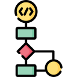
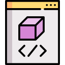

¿Qué es la programación orientada a objetos?

a) Un paradigma de programación basado en acciones y lógica.
b) Un paradigma de programación que organiza el software alrededor de objetos y datos.
c) Un lenguaje de programación específico.
¿Qué es una clase en POO?
a) Una instancia de un objeto.
b) Un método de una clase.
c) Una plantilla para crear objetos que define propiedades y métodos comunes.

¿Qué es un objeto en POO?
a) Un método especial de una clase.
b) Una instancia concreta de una clase que tiene atributos y métodos específicos.
c) Una instrucción de programación.
¿Qué es la encapsulación en POO?
a) Mostrar el estado interno de un objeto.
b) Ocultar el estado interno de un objeto y permitir el acceso solo a través de métodos.
c) Permitir el acceso directo a los atributos de un objeto.

¿Qué es la herencia en POO?
a) Una característica de la abstracción.
b) Un mecanismo que permite que una clase herede atributos y métodos de otra clase.
c) Un método especial de una clase.
¿Qué es el polimorfismo en POO?
a) La capacidad de ocultar el estado interno de un objeto.
b) La capacidad de objetos de diferentes clases de responder al mismo mensaje con comportamientos específicos.
c) La capacidad de crear una instancia de un objeto.
¿Qué es la abstracción en POO?
a) Un proceso de identificar las características esenciales de un objeto y eliminar los detalles irrelevantes.
b) Un mecanismo que permite que una clase herede atributos y métodos de otra clase.
c) Una instancia concreta de una clase que tiene atributos y métodos específicos.
¿Qué es un método constructor en POO?
a) Un método especial que se llama automáticamente al crear un nuevo objeto.
b) Un método de una clase que se utiliza para definir el comportamiento de un objeto.
c) Un método que oculta el estado interno de un objeto.